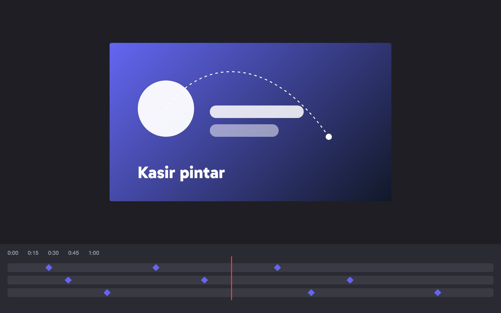
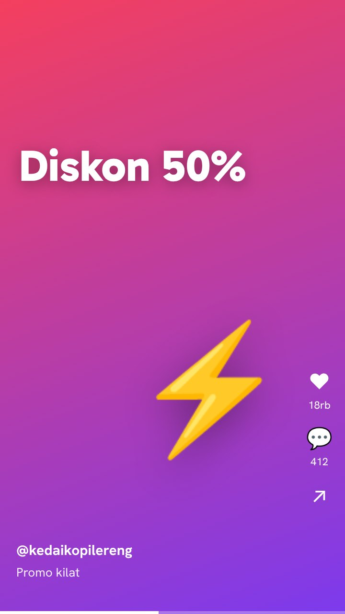
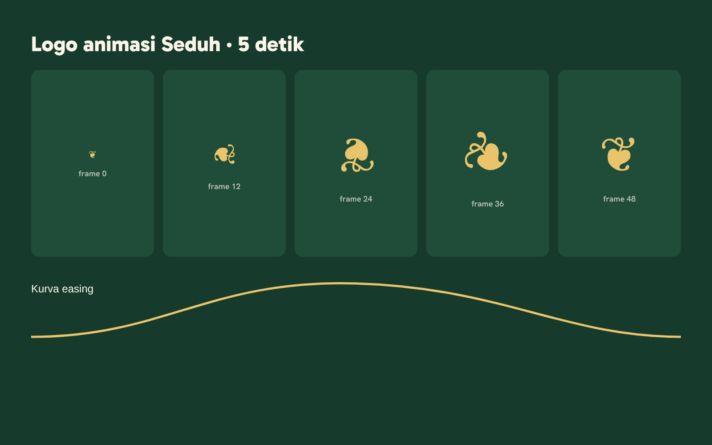
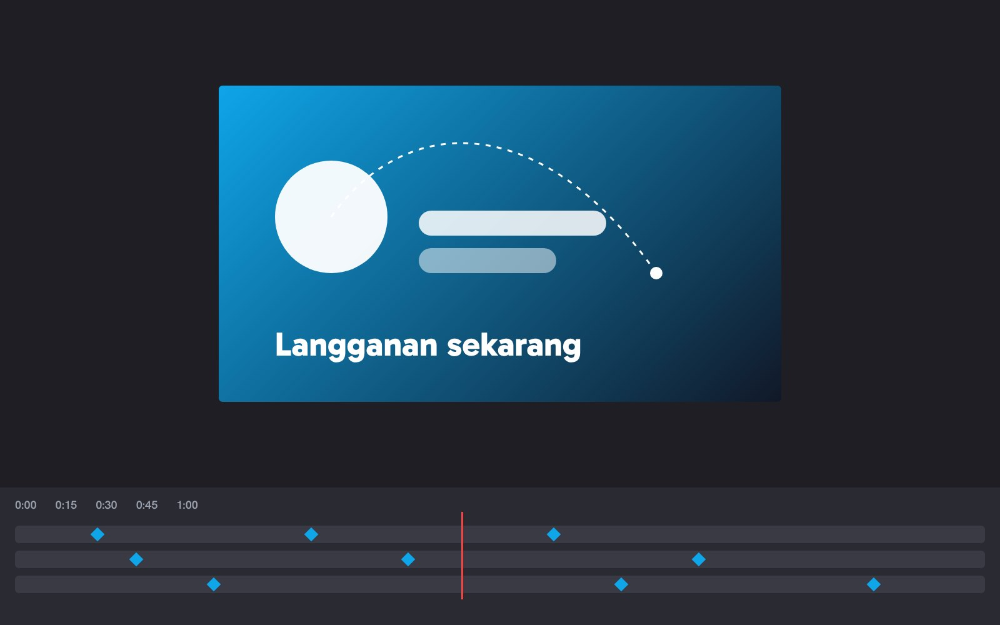
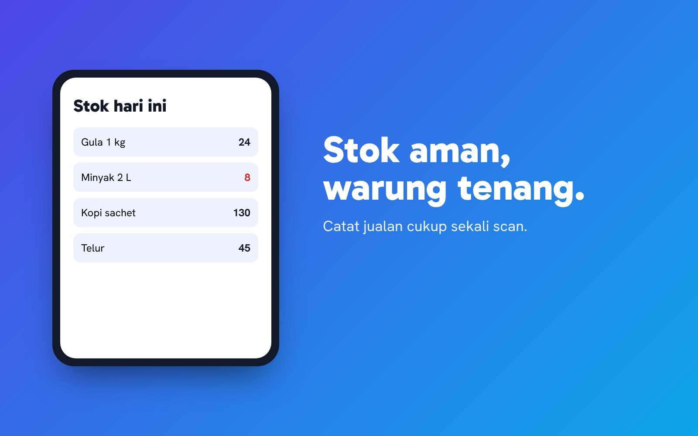
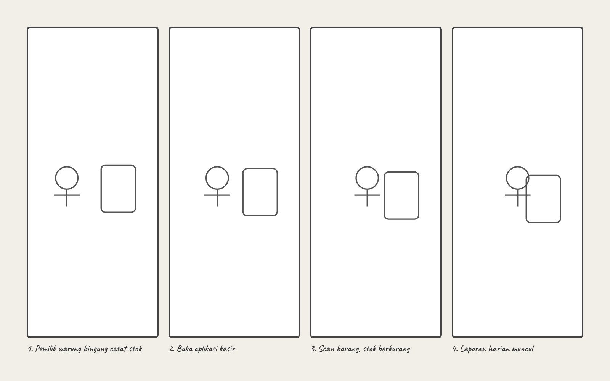

Explainer
Video explainer aplikasi kasir
60 detik, After Effects. Pertanyaan ke CS turun 42%.
Putar videoMotion Designer yang membuat ide bergerak dan mudah dipahami.
Motion designer yang bikin ide rumit jadi gampang dipahami dalam hitungan detik. Tiga tahun menganimasi explainer, logo, dan konten untuk startup dan brand.
Terbuka untuk posisi Motion Graphic Designer di agency atau startup, Jakarta atau remote

60 detik, After Effects. Pertanyaan ke CS turun 42%.
Putar video
15 detik untuk toko elektronik. 320 ribu views.
Putar video
5 detik intro untuk video dan iklan brand.
Putar video
Lower third, transisi, dan end screen yang bisa dipakai ulang.
Putar video

pertanyaan ke CS soal cara pakai dalam bulan pertama video dipasang di aplikasi.
Sisa halaman sengaja kami sembunyikan. Mau lihat versi lengkapnya? Chat kami, demo penuh kami kirim lewat WhatsApp.